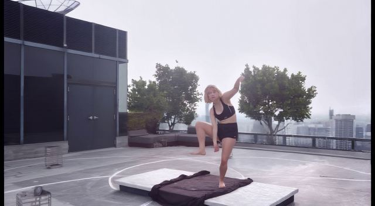

Stage3 统一案例进度表
统一案例：case13 · f845、VLM 20° 机位。三列是 39.53 秒整段时间线：前段原片、Stage2 运镜、21 帧 Stage3、原片余下尾段。原片参考列在 28.20–31.30 秒运镜期间定格以便对齐；Stage3 位于 31.30–32.00 秒。14 项同起点可比方案有完整本版，2 项独立模型未以 Stage2 末帧为条件、仅作参考，1 项仍待同案例重跑。
| 方案／测试版本 | 改进点 | 实际效果与视频 |
|---|---|---|
| 共同起点 | case13 · f845；VLM 选定相对原机位 +20°。DD 系列都以同一张 Stage2 最后一帧为图像条件，并在 50 步采样中固定首帧潜变量。 |  这是 DD 系列的真实共同起点；AnyView 和 MoVieS 未接入该起点，下面仅保留为独立模型参考。 查看各模型实际输入首帧对照 |
| 关节热图与运动残差投影关节时间残差 beta 0.5case13 · f845 目标视角轨迹 | 在 DD 相机或源动作分支加强关节附近的时序变化。 | 后段手臂目标机位误差 41.6→38.0px；脸手仍软，整片未通过。 |
| 关节热图与运动残差投影关节时间残差 beta 1.0case13 · f845 目标视角轨迹 | 在 DD 相机或源动作分支加强关节附近的时序变化。 | 手臂误差约 39.2px，不随剂量单调改善；整片未通过。 |
| 原生参数（角度、时长、CFG、控制强度）原生 DD CFG 1.5 | 固定同一源片、Stage2 终帧、VLM 20° 机位、21 帧和随机种子，仅将 DD 原生 CFG 从 1.0 调为 1.5；未重训。 | 同一 f845 输入的 CFG 1.5 已生成；视觉效果待人工审核。 固定同一 Stage2 终帧、VLM 20° 机位和源动作；本版只生成 21 帧 Stage3，整段预览拼接原片前后段。 |
| 人体区域加权短训练case13 · f845 待复测 | 让训练损失更关注人物、关节及运动区域。 | 这个固定输入尚无实测结果；此前其他案例的效果不计入本表。 待运行：f845–f865 共 21 帧、VLM 选定 20° 机位、同一 Stage2 终帧和源动作。 尚无这项方案在 f845 的整段成片 |
| Wan-Move 轨迹特征模块Wan-Move 官方轨迹函数 α0.35 | 以同一源片的 CoW 密集轨迹调用 Wan-Move 官方 create_pos_feature_map／replace_feature，在 DD 条件分支传播人物首帧特征；未用完整 Wan-Move 权重，未重训。 | 同一 f845 输入已生成；人物运动变化与第一版的差异待整片审核。 固定同一 Stage2 终帧、VLM 20° 机位和源动作；本版只生成 21 帧 Stage3，整段预览拼接原片前后段。 |
| Motion-I2V ForwardWarpMotion-I2V ForwardWarp α0.35 | 以 CoWTracker 测得的密集轨迹驱动 Motion-I2V 官方 ForwardWarp，传播人物区域首帧特征；未重训。 | 抽查五帧：人物持续抬腿，末段高踢幅度仍不足；待整片审核。 固定同一 Stage2 终帧、VLM 20° 机位和源动作；本版只生成 21 帧 Stage3，整段预览拼接原片前后段。 |
| FlashMotion 预训练适配器FlashMotion SlowAdapter α0.3 | 将官方预训练 SlowAdapter 接入 DD，用 f845 仿射剪影提示目标视角动作；未重训。 | 抽查五帧：抬腿姿态变化偏小，未恢复源片高踢；待整片审核。 固定同一 Stage2 终帧、VLM 20° 机位和源动作；本版只生成 21 帧 Stage3，整段预览拼接原片前后段。 |
| TTM 双时钟去噪TTM 双时钟 · 强约束 7 步 | 将官方 TTM 时间掩码和双时钟去噪规则接到 DD；用真实 f845 目标视角 warp 作估计参考，未重训。 | 抽查五帧：与第一版视觉相近，未见高踢明显恢复；待整片审核。 固定同一 Stage2 终帧、VLM 20° 机位和源动作；本版只生成 21 帧 Stage3，整段预览拼接原片前后段。 |
| Depth ControlNetDepth ControlNet · DD 目标深度 0.5 · case13 f845 | 用官方预训练深度模块约束目标视角结构。 | 抽帧仍未恢复源片后段高踢，动作与第一版接近；待整片审核。 与第一版固定同一 Stage2 终帧、20°相机和源动作；官方预训练模块推理期接入。 |
| Tile ControlNetTile ControlNet · warp 0.2 · case13 f845 | 用官方预训练细节模块加强人物与场景。 | 人物与背景大致保留，但后段高踢仍弱于源片；待整片审核。 与第一版固定同一 Stage2 终帧、20°相机和源动作；官方预训练模块推理期接入。 |
| HED ControlNetHED ControlNet · warp 0.5 · case13 f845 | 直接接入 TheDenk 官方 HED 权重与官方边缘预处理，约束 DD 目标视角结构；未重训。 | 后段高踢幅度仍小于源片，未见明确动作恢复；待整片审核。 与第一版固定同一 Stage2 终帧、20°相机和源动作；官方预训练模块推理期接入。 |
| Canny ControlNetCanny ControlNet · warp 0.5 · case13 f845 | 用目标视角边缘约束画面结构。 | 人物轮廓可见，后段高踢仍未跟上源片；待整片审核。 与第一版固定同一 Stage2 终帧、20°相机和源动作；官方预训练模块推理期接入。 |
| LaMa 修补＋TileLaMa 背景修补＋Tile 0.2 | 官方 LaMa 填补目标视角背景控制图，再用官方 Tile ControlNet 约束 DD；未重训。 | 抽查五帧：抬腿走势与第一版相近，手脸仍软；待整片审核。 固定同一 Stage2 终帧、VLM 20° 机位和源动作；本版只生成 21 帧 Stage3，整段预览拼接原片前后段。 |
| Depth＋Tile 双模块Depth＋Tile 双模块 0.5／0.2 | 同时接入官方 Depth 与 Tile ControlNet，约束目标视角深度和局部纹理；未重训。 | 抽查五帧：腿部走势与第一版接近，后段高踢仍不足；待整片审核。 固定同一 Stage2 终帧、VLM 20° 机位和源动作；本版只生成 21 帧 Stage3，整段预览拼接原片前后段。 |
| NLF 三维人体＋FlashMotionNLF 三维人体＋FlashMotion α0.3 | 用官方 NLF 三维人体估计生成目标视角剪影，再接入官方 FlashMotion SlowAdapter；未重训。 | 抽查五帧：人体轮廓尚可，腿部动作仍弱于源片；待整片审核。 固定同一 Stage2 终帧、VLM 20° 机位和源动作；本版只生成 21 帧 Stage3，整段预览拼接原片前后段。 |
| MoVieS 动态 3DGS 新视角MoVieS 官方 3DGS · 21 帧 | 官方 MoVieS 以同一源片抽取 13 帧重建动态 3DGS，再渲染 21 帧 VLM 目标视角；没有 Stage2 终帧条件。 | 未满足统一起点，不能参与同条件方案比较。抽查五帧：人物重影、大面积黑洞明显，与 Stage2 接缝不通过。 固定同一源片和 VLM 20° 机位；独立 NVS 未以 Stage2 终帧为条件，整段预览用相同 Stage2 与原片前后段拼接，接缝须单独审核。 |
| AnyView 动态新视角AnyView 官方 2B · 21 帧 | 官方 AnyView 2B 根据同一源片及 VLM 20° 相机独立生成新视角；没有 Stage2 终帧条件。 | 未满足统一起点，不能参与同条件方案比较。抽查五帧：动作较连续，但画面明显变暗，与 Stage2 接缝突兀。 固定同一源片和 VLM 20° 机位；独立 NVS 未以 Stage2 终帧为条件，整段预览用相同 Stage2 与原片前后段拼接，接缝须单独审核。 |